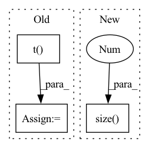

Pattern ID :40065

Before Change
g_kfe = self._to_kfe_sua(g, kfe_x, kfe_gy)
m2.mul_(self.alpha).add_((1. - self.alpha) * bs, g_kfe ** 2)
g_nat_kfe = g_kfe / (m2 + self.eps)
g_nat = self._to_kfe_sua(g_nat_kfe, kfe_x.t(), kfe_gy.t())
if bias_grad is not None:
gb = g_nat[:, -1, s[2] // 2, s[3] // 2]
// bias.grad.data = gb
After Change
gb = gb[None, :, None, None].repeat(1, 1, s[2], s[3]) // (out, 1, kh, kw)
g = torch.cat([g, gb], dim=1) // (out, in + 1, kh, kw)
N = state.x.size(0)
g_kfe = self.to_kfe_sua(g, state.kfe_x, state.kfe_gy) // (out, in + 1, kh, kw)
m2 = self.alpha * state.m2 + (1 - self.alpha) * N * (g_kfe.square()) // (out, in + 1, kh, kw)
g_nat_kfe = g_kfe / (m2 + self.eps) // (out, in + 1, kh, kw)
g = self.to_kfe_sua(g_nat_kfe, state.kfe_x.t(), state.kfe_gy.t()) // (out, in + 1, kh, kw)
In pattern: SUPERPATTERN
Frequency: 3
Non-data size: 3
Instances
Fragment ID: 113902875
Project Name: ain-soph/trojanzoo
Commit Name: 6c7dbc51bfacdfb1fbe957a3544f7f6d1ae55bb4
Time: 2021-09-24
Author: ain-soph@live.com
File Name: trojanzoo/utils/fim/ekfac.py
M Class Name: EKFAC
N Class Name: EKFAC
M Method Name: _precond_sua_ra(4)
N Method Name: _precond_sua_ra(4)
M Parent Class: BaseKFAC
N Parent Class: Optimizer
M File Name: trojanzoo/utils/fim/ekfac.py
N File Name: trojanzoo/utils/fim/ekfac.py
M Start Line: 167
M End Line: 196
N Start Line: 86
N End Line: 106
'>
Before Change
text_latents, image_latents = map(lambda t: F.normalize(t, p = 2, dim = -1), (text_latents, image_latents))
labels = torch.arange(input.size(0), device = image_latents.device)
sim_i_2_t = torch.matmul(torch.mul(logit_scale, image_latents), torch.t(text_latents))
sim_t_2_i = torch.matmul(torch.mul(logit_scale, text_latents), torch.t(image_latents))
loss_t_2_i = F.cross_entropy(sim_t_2_i, labels)
loss_i_2_t = F.cross_entropy(sim_i_2_t, labels)
After Change
if return_loss:
assert image.size(0) == input.size(0), "Not Support for unbalanced image-text pair"
loss_t_2_i = F.cross_entropy(sim_t_2_i, torch.arange(input.size(0), device = image_latents.device))
loss_i_2_t = F.cross_entropy(sim_i_2_t, torch.arange(image.size(0), device = image_latents.device))
return sim_i_2_t, sim_t_2_i, loss_i_2_t, loss_t_2_i
else:
return sim_i_2_t, sim_t_2_i
'>
Fragment ID: 113902876
Project Name: weiyx16/clip-pytorch
Commit Name: 6cd0a84a4b3df54d9b248294556800a0ec49c09d
Time: 2021-01-08
Author: weason1998@gmail.com
File Name: CLIP.py
M Class Name: CLIP
N Class Name: CLIP
M Method Name: forward(4)
N Method Name: forward(3)
M Parent Class: nn.Module
N Parent Class: nn.Module
M File Name: CLIP.py
N File Name: CLIP.py
M Start Line: 241
M End Line: 253
N Start Line: 252
N End Line: 267
'>
Before Change
dist = pairwise_euclidean_distance(inputs_col, inputs_row)
// split the positive and negative pairs
pos_mask = targets_col.expand(
targets_row.shape[0], n
).t() == targets_row.expand(n, targets_row.shape[0])
neg_mask = ~pos_mask
// For each anchor, find the hardest positive and negative
dist_ap, dist_an = [], []
After Change
dist_mat = pairwise_euclidean_distance(f, xbm_f)
// hard examples mining
n, m = f.size(0), xbm_f.size(0)
identity_mat = labels.expand(m, n).t().eq(xbm_labels.expand(n, m)).float()
dist_ap, dist_an = hard_examples_mining(dist_mat, identity_mat)
'>
Fragment ID: 113902882
Project Name: thuml/transfer-learning-library
Commit Name: 0f8f51c4b2fac78edf87e29764e4da3deec6f65f
Time: 2021-10-14
Author: 57670068+tsingcbx99@users.noreply.github.com
File Name: common/vision/models/reid/loss.py
M Class Name: TripletLossXBM
N Class Name: TripletLossXBM
M Method Name: forward(5)
N Method Name: forward(5)
M Parent Class: nn.Module
N Parent Class: nn.Module
M File Name: common/vision/models/reid/loss.py
N File Name: common/vision/models/reid/loss.py
M Start Line: 132
M End Line: 152
N Start Line: 154
N End Line: 162